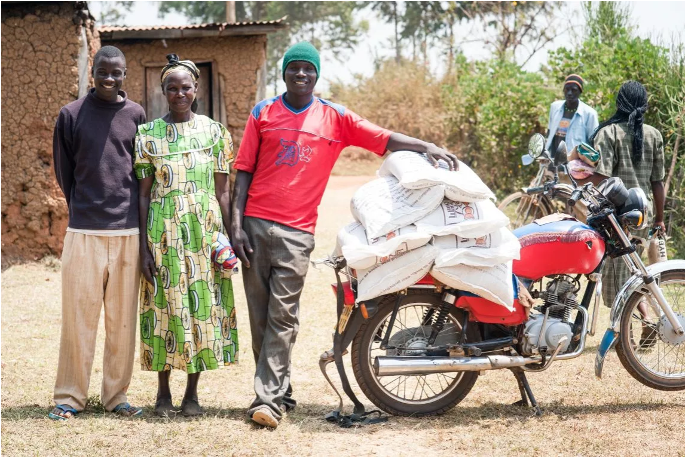

Articles, featured publications, and deep dives into supply chain practice
Drawing from 18+ years across agriculture, manufacturing, and humanitarian supply chains, I share practical lessons on what works — and what doesn't — in complex operational environments.
One Acre Fund's delivery experts share the organization's experience delivering life-changing products to more than a million farmers across six countries, and the lessons learned along the way.
"Without last-mile delivery, One Acre Fund wouldn't create the same impact. We work for that farmer in a remote location who would otherwise not get quality planting supplies."
— From the article

Input distribution at a delivery site in rural Kenya. Photo: One Acre Fund
After years of building and maintaining complex Excel-based MRP systems, I transitioned to creating an interactive web application using Python and Streamlit. This piece walks through the motivation, the build process, and the results.
Having led or co-led the implementation of four different ERP and WMS systems — SAGE X3, SYSPRO 7, MS Dynamics, and Cobi WMS — I've learned that technology is never the hardest part. Here are the lessons that matter.
My time at One Acre Fund — delivering farm inputs to 450,000+ smallholder farmers across rural Kenya — taught me principles that apply far beyond the humanitarian sector.
"We wake up every day not to profit but to impact lives; that is as great a reason as they come."
— One Acre Fund article, 2021
I'm currently developing content on:
Have a topic you'd like me to explore? I welcome suggestions.
Suggest a Topic